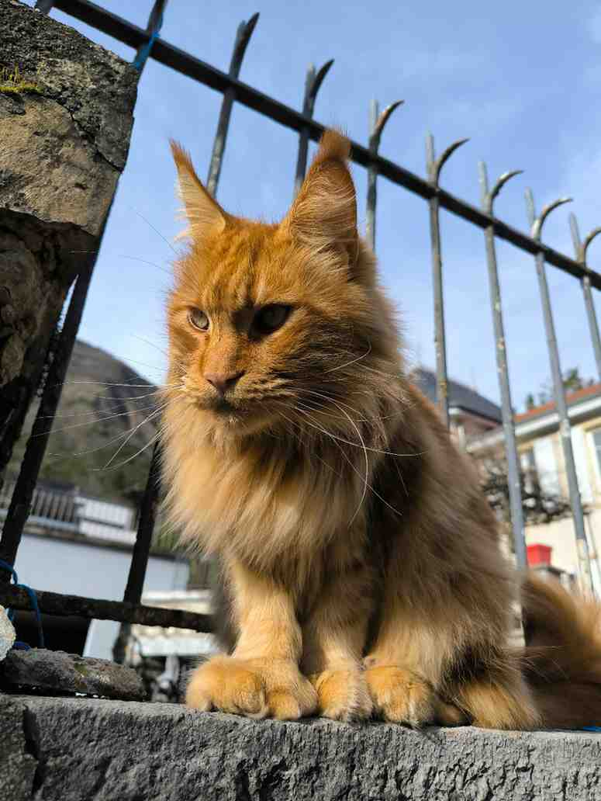
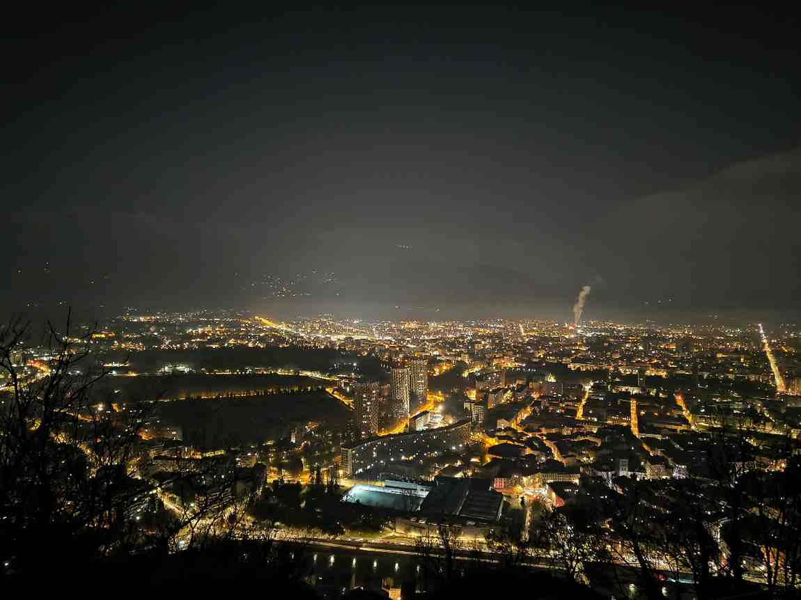

Pourquoi j'aime cette activité
La photographie me plaît parce qu'elle me pousse à observer davantage ce qui m'entoure. Quand je prends une photo, je fais attention à la lumière, aux formes, aux couleurs et à l'ambiance du lieu. J'aime bien le fait qu'on peut transformer une scène très simple en une image intéressante juste en choisissant le bon angle.
J'aime aussi cette activité parce qu'elle me permet de garder une trace de certains moments. Ce ne sont pas forcément de très grands événements. Parfois, c'est juste une promenade, une rue, un coucher de soleil ou une vue de nuit qui me donne envie de sortir mon téléphone et de prendre une photo.
Ce que j'aime photographier
- les rues et les petits passages
- les couchers de soleil
- les vues sur la mer
- les paysages urbains de nuit
- les détails simples du quotidien

Les photos de nuit
J'aime particulièrement essayer les photos de nuit, même si ce n'est pas toujours facile. Il faut faire attention à la lumière, à la stabilité et au cadrage. Malgré cela, c'est un style de photo qui m'intéresse beaucoup, parce que les villes éclairées ont une ambiance très différente de la journée.
La photo ci-dessous a été prise à Grenoble. J'aime bien ce type de vue parce qu'on voit à la fois la ville, les lumières et le relief autour. Ce sont des images qui demandent un peu plus de patience, mais je trouve le résultat très intéressant.
